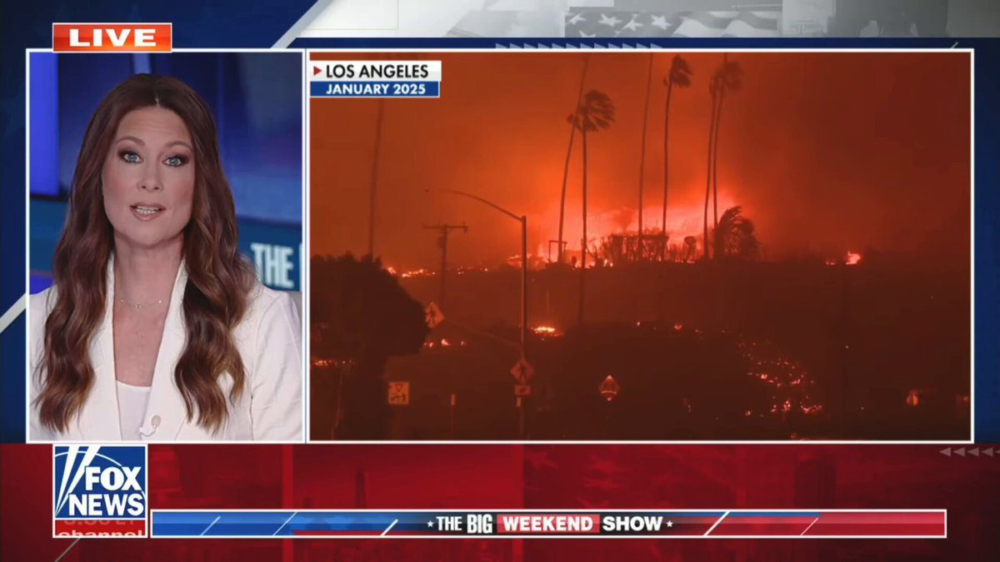
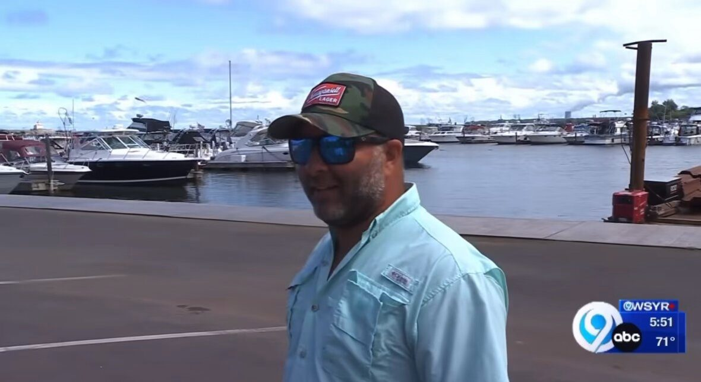
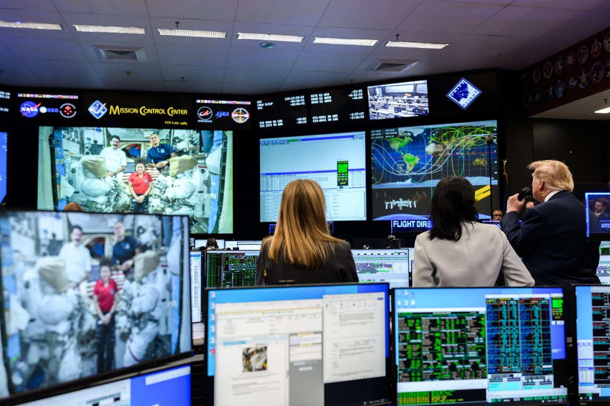
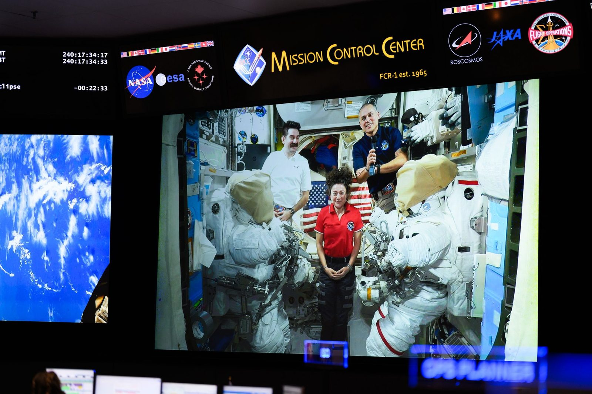
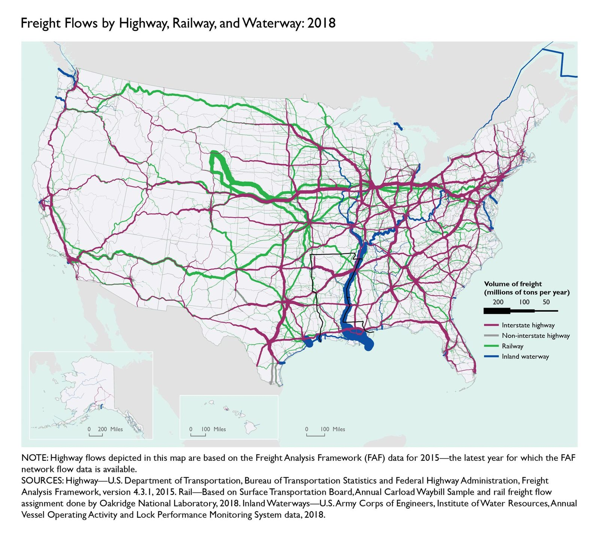

▶ Watch on X🚨 BOMBSHELL: Los Angeles County is STEALING funds from a wildfire relief fund to give up to $15K CHECKS to noncitizens or residents "impacted by ICE raids" All "without checking the recipient's immigration status" $5 MILLION has already been redirected 🤯 THIS IS OUTRAGEOUS! 600 days, most LA residents still can't even return to their homes after they were lost to the wildfires But now money might be handed out to noncitizens? California is AMERICANS LAST!
Today @POTUS signed an EO establishing the Presidential Commission on the United States Space Academy.
The Commission will be led by our great @NASAAdmin and will design a @NASA-led federal academy that combines rigorous technical education with leadership, discipline, and a durable commitment to public service.
The mission is to prepare the next generation of astronauts, scientists, engineers, operators, entrepreneurs, civil servants, and warfighters.
American space superiority will be won by the people we train to explore, secure, and build there.
Minimax H3 Max has generates video faster than you can watch it so I hooked it to a twitch livestream! Now you can watch infinite interdimensional cable - link to the stream below
▶ Watch on XBREAKING: President Donald J. Trump just signed an Executive Order establishing a new federal academy, THE UNITED STATES SPACE ACADEMY. 🚀🇺🇸
SpaceX and Tesla are each building 100GW/year of solar production capacity as fast as possible, but natural gas will still be needed to supplement and bootstrap solar for several years.
The limiting factor for nat gas turbine production is casting the blades & vanes. By doing in-house casting at SpaceX, we can accelerate nat gas turbines coming online by up to 18 months, which is a profound game-changer.
JUST IN: SpaceX targets Sunday morning for the launch of NASA’s Roman Space Telescope, designed to probe dark energy, dark matter, & the evolution of the universe.
JUST IN: NASA to launch a $4.3 billion space telescope designed to “scan the universe” in unprecedented detail.
New York man reacts to Trump renaming Lake Ontario:
"We actually went out yesterday on Lake Ontario, and came back on Lake America — and I'd like to think I've caught the first King Salmon caught on Lake America."
Patriot.

▶ Watch on XThe FIRST President in history to call astronauts aboard the International Space Station, live from Mission Control. 🇺🇸🚀


🚨 NOW: Treasury Sec. Scott Bessent is gearing up to use the G20 summit to surge more nations into DECIMATING the Iranian economy
130 MILLION barrels of oil have recent exited the Strait, Iran is crumbling! 🔥
"Scott Bessent is leading the charge."
"He will be trying to persuade G20 nations to join the US sanctions program."
He's going to go down as one of the GREATEST Treasury Secretaries in history 🇺🇸
BREAKING: North Korea defense minister dismissed, state media reports
🚨#BREAKING: Greenland declares it "cannot yet conclude" whether Denmark’s forced contraception campaign against Inuit women meets the legal definition of genocide.
JUST IN: Vietnam declares it is ready for “constructive” trade talks with the United States.
BREAKING: ICE is considering purchasing robot dogs to assist with immigration enforcement. — Bloomberg
This is one of my new favorite maps. It shows the real America and the immense power that flows through the Heartland. Physical commerce. Not the office jobs, the insurance companies, the vast number of urban consumers on welfare. This is where the real is produced. 1/

BREAKING: NYPD seizes more than 580 pounds of cocaine from an alleged cartel-linked operation in Queens — the largest NYC cocaine bust in nearly a decade.
🚨#BREAKING: NBC News crew reportedly beaten with clubs by Israeli settlers in the West Bank, leaving five journalists injured and their camera smashed.
JUST IN: U.S. is reportedly threatening to “change its stance” on the Falkland Islands unless the U.K. increases defense spending.